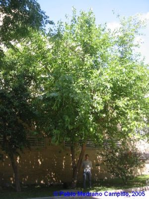
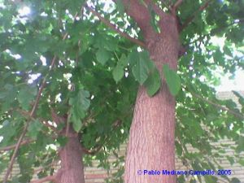

Flora ornamental del Campus de Reina Mercedes, Universidad de Sevilla - Ficha nº 62 - Versión 1
|
Broussonetia
papyrifera Vent.,
Tabl. Règne Vég. III: 547 (1799)
|
Moráceas |
|
Morera del papel; higuera del papel |
Árbol caducifolio |
|
Árbol dioico, caducifolio, que puede alcanzar alturas de 4,5 m, con la copa redondeada y el tronco algo sinuoso, tendiendo a crecer ramificado desde la base en ocasiones. La corteza es lisa, tornándose muy agrietada en la vejez. Inflorescencia masculina en forma de amentos colgantes de 3-7 cm de longitud, las femeninas en forma de cabezuelas globosas cubiertas de pelos muy patentes. Florece en Abril-Mayo. Infrutescencia de forma esférica, compuesta por numerosos aquenios pequeños. Color rojo de unos 2 cm de diámetro. Maduran y caen al principio del otoño. |
 |
|  Fotos: Pablo Medrano Campillos (2005) |
Observaciones:
El nombre genérico
está dedicado al francés Broussonet, botánico que
al parecer introdujo esta especie en Francia en el siglo XVIII.
Papyrifera viene del latín, y significa productora de papiro
o papel, ya que su corteza se utilizó en Oriente para su
fabricación. Se puede multiplicar por semillas y por
esquejes con facilidad. Especie bastante resistente a la sequía
y a todo tipo de suelos. Resiste bastante bien la proximidad del mar.
Suele cultivarse como árbol de sombra de manera aislada.
|
| Área de origen.- China, Japón, Taiwan y Malasia. | |
| Uso en el campus: un solo ejemplar como árbol ornamental | Localización.-
Zona
Central del Campus: parcela
Este de la facultad de Matemáticas
|
|
Bibliografía: www.arbolesornamentales.com ; www.infojardin.com. |
|
| Autores: José Ruiz Martín (2006) & Carlos Romero Zarco (2007) | |